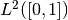
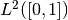

Extending ODL¶
ODL is written to be easy to extend with new functionality and classes, and new content is welcome. With that said, not everything fits inside the main library, and some ideas are better realized as extension packages, i.e., packages that use the core ODL library and extend it with experimental features. This lowers the requirement on code maturity, completeness of documentation, unit tests etc. on your side and allows the core library to stay slim and develop faster.
There are several ways to extend ODL, some of which are listed below.
Adding Fn spaces¶
The abstract spaces FnBase and NtuplesBase are the workhorses of the ODL space machinery. They are used in both the discrete  case, as well as data representation for discretized function spaces such as  in the
case, as well as data representation for discretized function spaces such as  in the DiscretizedSpace class. These are in general created through the rn and uniform_discr functions who take an impl parameter, allowing users to select the backend to use.
In the core ODL package, there is only a single backend available: NumpyFn/NumpyNtuples, given by impl='numpy', which is the default choice. Users can add CUDA support by installing the add-on library odlcuda, which contains the additional spaces CudaFn/CudaNtuples. By using the rn/uniform_discr functions, users can then seamlessly change the backend of their spaces.
As an advanced user, you may need to add additional spaces of this type that can be used inside ODL, perhaps to add MPI support. There are a few steps to do this:
- Create a new library with a
setuptoolsinstaller. - Add the spaces that you want to add to the library. The space needs to inherit from
NtuplesBaseorFnBase, respectively, and implement all of the abstract methods in those spaces. See the spaces for further information on the specific methods that need to be implemented. - Add the methods
ntuples_impls()andfn_impls()to a fileodl_plugin.pyin your library. These should return adictmapping names to implementations. - Add the following to your library’s
setup.pysetup call:entry_points={'odl.space': ['odl_cuda = odlcuda.odl_plugin'], where you replaceodlcudawith the name of your plugin.